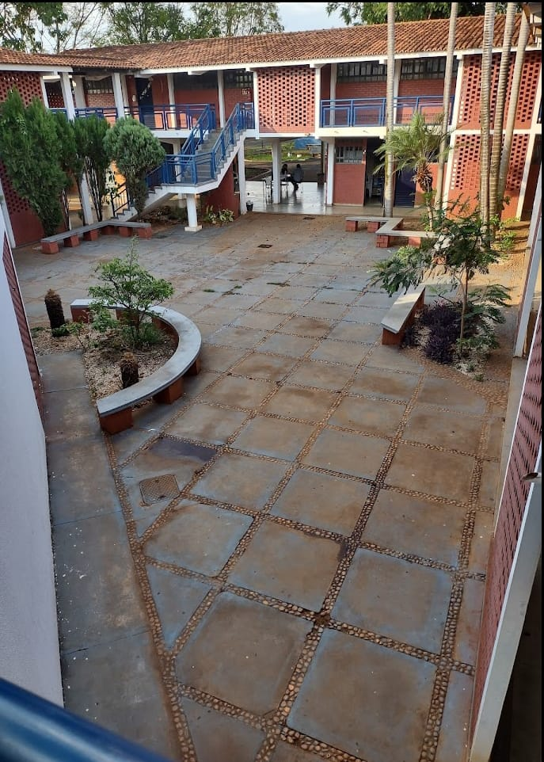

SOBRE A UNIVERSIDADE
A Universidade Estadual de Goiás (UEG) é uma universidade pública multicampi do Estado de Goiás, criada pela Lei Estadual 13.456, de 16 de abril de 1999.
Nos termos do seu Estatuto, aprovado pelo Decreto Estadual nº 9.593, de 17 de janeiro de 2020 e do Regimento Geral aprovado por seu Conselho Universitário, a UEG é uma instituição de ensino, pesquisa e extensão com finalidade científica e tecnológica, de natureza cultural e educacional, com caráter público, gratuito e laico. Trata-se de uma autarquia do poder executivo do Estado de Goiás, com autonomia didático-científica, administrativa e de gestão financeira e patrimonial, nos termos do Artigo 207 da Constituição da República Federativa do Brasil, do Artigo 161 da Constituição do Estado de Goiás e da Lei Estadual nº 18.971, de 23 de julho de 2015. Rege-se por seu Estatuto, seu Regimento Geral e por suas normas complementares.
A UEG possui sede no município de Anápolis (GO) e alcance acadêmico organizado em oito regiões do estado, a partir de Câmpus e Unidades Universitárias (UnU) presenciais, assim como de Polos de Educação a Distância (EaD). Esta presença alcança todas as microrregiões de Goiás definidas pelo Instituto Brasileiro de Geografia e Estatística (IBGE), atribuindo à UEG, como única universidade pública estadual de Goiás, perfil e função estratégica para a interiorização do acesso, das condições, dos processos e dos resultados da educação superior pública, do desenvolvimento científico e tecnológico e da inovação que ele promove desde o âmbito local nos municípios.
No limiar da celebração do seu jubileu de prata, estas características alicerçam o perfil da UEG como Instituição Pública Estadual de Educação Superior, Ciência e Tecnologia, dedicada a alcançar e responder, local e regionalmente, às demandas de formação de pessoal de nível superior nos municípios goianos para o seu desenvolvimento.
Temos uma ótima estrutura.

Salas de aula climatizadas.
Biblioteca.
Salas de informática.